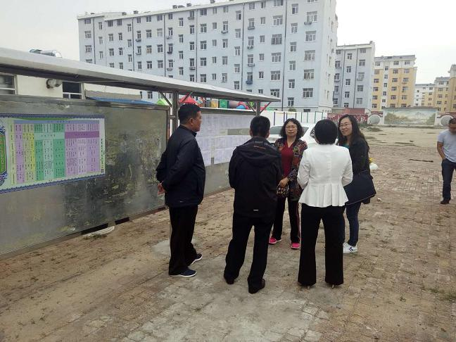

2018年9月9日至11日，农工党赤峰市委调研组赴赤峰市巴林右旗开展脱贫攻坚工作专项调研。
调研组深入赤峰市巴林右旗卫生局、扶贫办、教育局，巴林右旗宏发巴林牧业公司、巴林红食品有限公司，大板镇社区卫生服务中心等部门单位及部分因病致贫的家庭，通过实地考察、走访慰问、查阅档案、面对面座谈等方式，详细了解健康扶贫、教育扶贫、产业扶贫、金融扶贫工作开展情况及在开展脱贫攻坚工作中遇到的困难和存在问题。

结合巴林右旗实际情况，调研组对深入开展精准脱贫提出建议。一是加大产业扶贫力度，通过发展经济、吸纳就业，实现群众劳动增收；二是扩大健康扶贫影响，通过加强宣传教育，提高农牧民健康意识，确保农牧民早预防、早治疗、少花费；三是严把金融扶贫审核关，协调银信部门降低金融扶贫借贷款门槛准入标准，满足扶贫对象发展生产的资金需求，把真正需要贷款的群众吸引到正规贷款渠道上来，有效控制民间借贷；四是深入推进教育扶贫，不断提升群众素质，切断贫困代际传递。整合使用各类助学金，减少重复救助，向边缘户倾斜，提高资金使用效率。